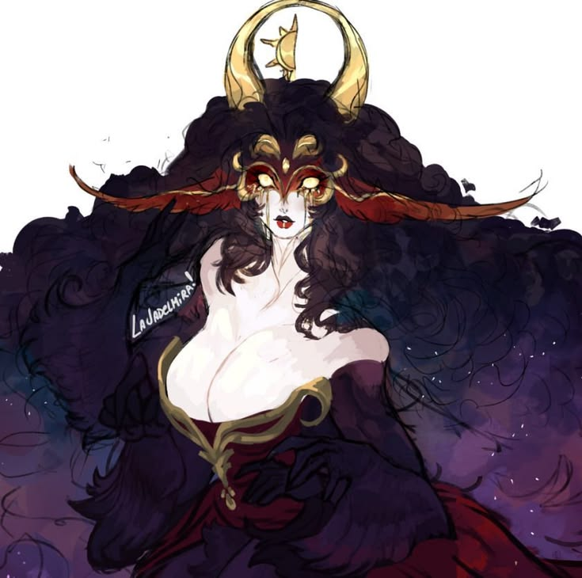
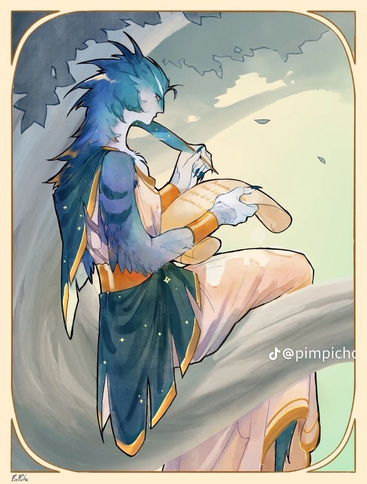

A Família Nancons governa Gémìng, cidade responsável pelas exportações e importações do Reino da Chama Eterna. Uma casa nascida não de sangue nem de guerra, mas de uma carta entregue ao destinatário errado — e da amizade que, a partir dela, uniu o Rei a uma antiga sacerdotisa apaixonada.
✦ A DUQUESA DE GÉMÌNG

✦ família nancons
Yue Nancons
Antiga sacerdotisa do templo de Mond, abdicou do posto ao se apaixonar por Frang e mudou-se para Gémìng para se casar com ele — juntos abriram uma loja de cartas e entrega de mensagens. Sua existência chegou ao Rei por engano: o que deveria ser uma carta para um parente distante caiu em suas mãos e fez Liang rir como uma criança outra vez. Xiu foi buscá-la e a levou ao castelo, incentivando a amizade entre os dois. Atualmente é regente de Gémìng, cuidando das exportações e importações.
✦ O CONDE DE GÉMÌNG

✦ família nancons
Frang Nancons
Vivia no Reino Flutuante, em Ala, como guarda real, até viajar ao Reino Polaris acompanhando uma carga — foi lá que conheceu Yue. Dizem os ventos que seu coração bateu tão rápido que até os ratos entre os caixotes notaram. Falador nato, um traço que só favoreceu seu cargo.